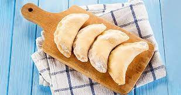

Pierogi

Description
Pierogis, originating from Eastern European cuisine,
are delightful dumplings that have gained popularity worldwide.
These delectable treats consist of a delicate dough wrapped around
a variety of savory or sweet fillings. Traditionally, pierogis are
filled with ingredients such as mashed potatoes, cheese, sauerkraut, mushrooms,
or ground meat, although modern variations incorporate unique fillings like spinach,
bacon, or even fruits like blueberries. Once the filling is enclosed, the pierogis
are either boiled or pan-fried until they achieve a delightful balance between
softness and slight crispiness. Served hot and often accompanied by a dollop of sour cream
or a drizzle of melted butter, pierogis offer a comforting and satisfying experience that is
loved by food enthusiasts seeking a taste of authentic, hearty Eastern European cuisine.
Ingredients
- Dough:
- 2 cups all-purpose flour
- 1/2 teaspoon salt
- 1 large egg
- 1/2 cup water
- Filling Options:
- Mashed potatoes
- Cheese (such as cheddar or farmer's cheese)
- Sauerkraut
- Mushrooms
- Ground meat (such as beef or pork)
- Spinach
- Bacon
- Blueberries (for sweet pierogis)
- Additional Ingredients:
Steps
- Prepare the Dough:
- In a mixing bowl, combine 2 cups of all-purpose flour and 1/2 teaspoon of salt.
- Add 1 large egg and 1/2 cup of water to the bowl.
- Stir the ingredients until a dough forms.
- Knead the dough on a floured surface until smooth.
- Cover the dough and let it rest for about 30 minutes.
- Make the Filling:
- Choose your preferred filling option, such as mashed potatoes, cheese, sauerkraut, mushrooms, or ground meat.
- Prepare the filling ingredients according to your recipe or taste.
- Assemble the Pierogis:
- Roll out the dough on a floured surface until it's about 1/8 inch thick.
- Use a round cookie cutter or glass to cut out circles from the dough.
- Place a spoonful of filling in the center of each dough circle.
- Fold the dough over the filling and seal the edges by pressing them together.
- Cook the Pierogis:
- Bring a pot of salted water to a boil.
- Drop the pierogis into the boiling water and cook until they float to the surface, usually for about 3-5 minutes.
- Remove the cooked pierogis from the water using a slotted spoon and transfer them to a plate.
- Serve and Enjoy:
- Serve the pierogis hot, optionally with a side of sour cream or melted butter.
- Enjoy the delicious and comforting pierogis!